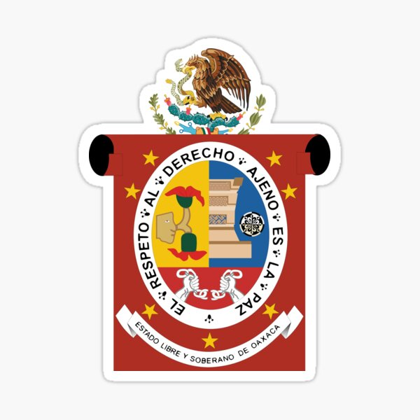

OAXACA
Oaxaca es uno de los estados más representativos de la riqueza cultural, histórica y natural de México. Ubicado en el sur del país, destaca por su gran diversidad étnica, sus tradiciones vivas, su gastronomía única y sus paisajes impresionantes. Es un estado donde el pasado indígena se conserva con orgullo y se manifiesta en todos los aspectos de la vida cotidiana.